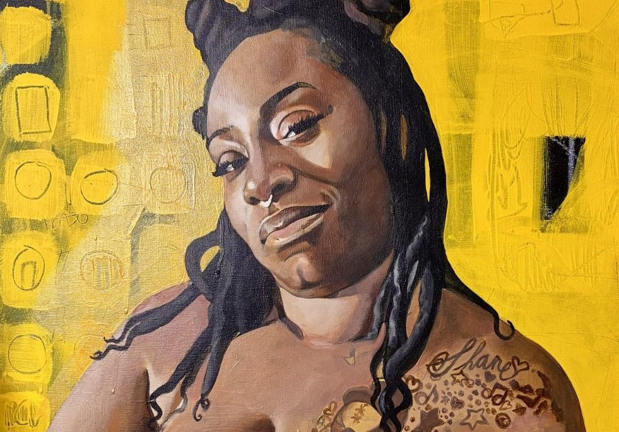

The Closing Reception of Black Female Presence with Shane-Jahi Jackson by guest curator Juelle Daley
The image of Black women in Western Art is one riddled with stereotypes, racial mythologies, visions of servitude and sexual transgressions.
In 1994, Harvard’s Dubois Institute began a research project which later birthed seven volumes on The Image of the Black in Western Art by Harvard’s scholar Henry Louis Gates and David Bindman. All volumes document in detail the fate of ‘black presence’ in European Art and how it historically served to relegate blackness as the extreme opposite of white superiority.
This exhibition continues in the same vein but removes all references to European Art to focus squarely on the Black female model and not as a tool to reaffirm European representational superiority and Christian morals about the body.
Shane-Jahi Jackson’s, Black Female Presence, evades providing the viewer an instructional manual on how to interpret his series of semi-nude figurative paintings of Black women. His “no comment stance” is a deliberate one that resists the impulse to qualify or explain the why of these paintings. Instead, he demands that the viewer have the same reaction or sentiment of awe and the sublime upon seeing Botticelli’s Renaissance painting on the Birth of Venus for the first time without erotizing the image.
The ensemble of works posits the idea that Black women can also be a portal to the Universal and invites the viewer to leave their cliches, biases and judgement at the door.
Shane-Jahi celebrates these women.